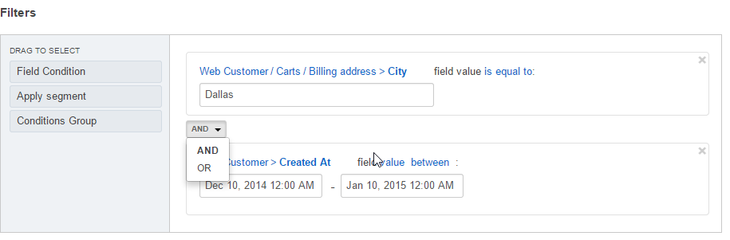
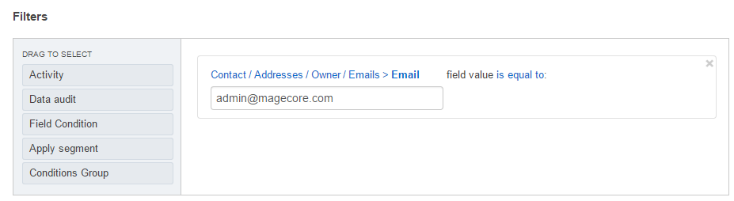
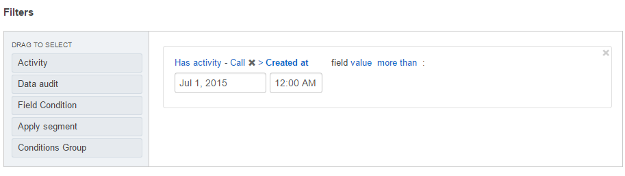
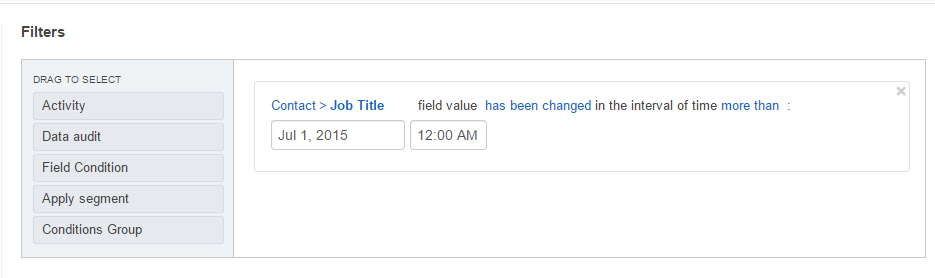

Filters¶
Filters are used to define a set of records to be displayed. Its configuration enables users to automatically select only the records that meet the filter requirements.
Filters are always created for the records of a specific type (entity) specified in the general details of the relevant field.
This section will help you learn the basics of filtering expressions and their elements:
Filters Options¶
To define filter, use any of the following filter options or combine them:
- Field Condition: select only the records with specific values of the selected fields.
- Activity: select only the records to which a specific kind of activity has been/has not been assigned.
- Data Audit: select only the records that have been modified in a specific way (available only when the corresponding functionality is enabled for an entity).
- Conditions Groups: sets of field conditions that combine requirements of several other filters in one group.
- Segments: sets of records dynamically or manually updated in compliance with predefined filters. More details are described in the Segments guide.
Sample filter that finds all the records with any related activity logged:
AND/OR Operators¶
To combine the conditions of two or more filters, you can use the operators AND and OR:
- If AND is used, only the records that meet conditions of all the connected filters will be selected.
- If OR is used, all the records that meet conditions of any of the connected filters will be selected.
The following sections provide a detailed explanation of the filters with examples for different operators.
Field Conditions¶
Field Condition filters specify a rule for values of the record attributes. Only the records that meet the condition will be selected.
To define a field condition:
- Drag Field condition to the box on the right.

- Click Choose a field.
- A list of fields appears. At the top of the list, you can see the name of the field, for which the records are filtered. (In the example below it is a Contact). Below the Contact name, there is a list of all available fields related to it.

- Select a field that you want to apply for the rule:
- This can be a field of the entity selected in the General section. For example, we can filter Contact records by gender.

You can also select a field of another entity, related to it. For example, if you want the list to contain only Contacts with addresses in California.
To do so, scroll down the list and select this field under the Related Entities header.

The name of the selected field (in our example, it is Addresses) will appear at the top of the list.
You can also add another field related to Addresses under the Related entities section. For example, you can select only the contacts whose Address Owner has a specific Email.

Hint
Once you have specified all the required conditions, another default field condition appears. Some components of this field contain links with a list of possible values suitable for the specified field.
Activities¶
The Activity filter specifies a rule for activities assigned to the record. Only the records that meet the condition will be selected.
To define the activity settings:
- Drag Activity to the box on the right.
- There are three selector links:

Has activity /has not activity - only the records to which the defined activity has/has not been assigned will be selected.

The List of available activities to filter by.

Choose a field: select the field to filter by. For example, we will select only the records, for which a call was logged after July 1, 2015.
Data Audit¶
The Data audit filter specifies a rule for the record changes recorded in the system. Only the records that meet the condition will be selected.
To define the data audit settings:
Select a field for which a condition is defined in the same way as described above in Field Conditions.
Determine if the condition should be valid for the records where the field has or has not been changed.
Select the date when the changes have/have not been applied.
For example, we will select only the records, for which Job Title value has been changed since July 1, 2015.
Note
You can combine any number of Activity, Data audit, and Field Condition filters, joining them with the AND and OR operators.
Conditions Groups¶
A conditions group is a set of activity and/or data audit, and/or field condition filters already joined with the AND and OR operators. A field condition works as the brackets in mathematics, so all the filters added to a condition group are applied first.
To define the Condition Group filter:
- Drag Conditions Group to the box on the right.
- Add the Activity, Data audit, and Field Condition filters to the section that appears.
- Define the conditions and conjunctions between them.
Hint
For complex conditions, it is a good idea to draw an outline of the conditions first.
A condition group may also be included into another condition group as a separate filter.
Segments¶
A segment is a set of the Activity, Data audit, Field Condition, and Condition Group filters created separately for the records of a specific field. It can be updated dynamically or upon a user’s request.
In other words, if you often need to use a specific set of conditions to filter the entity records, you can create a segment and use it instead of redefining the same conditions again.
The ways to create and manage segments are described more detailed in the Segments guide.
To add a segment to the filters:
Drag Apply segment to the box on the right.

Click Choose segment and select one of the Segment predefined in the system.

Subject to the conjunction with the rest of conditions, the list will now include:
- Only the records from the segment that correspond to the rest of conditions (AND is used).
- The records that correspond to the rest of conditions and the segment (OR is used).